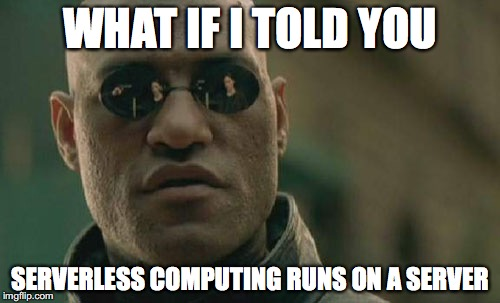

<!doctype html>

<head>
  <meta charset="utf-8">
  <title>λ</title>
</head>

<script language="javascript">

// Determine image dimensions to avoid placing outside of visible display
// TODO: Do this dynamically from Lambda (and display random computing meme?)
var imgHeight = 303
var imgWidth = 500

// Set upper limit on values requested from API based on image dimensions above
var maxHeight = document.documentElement.clientHeight - imgHeight
var maxWidth = document.documentElement.clientWidth - imgWidth

// Call AWS Lambda function via API gateway for a set of image coordinates
// ("Hello world" is just so cliche)
var apiURL = "https://giakjnvdt2.execute-api.us-west-2.amazonaws.com/prod/api/randomcoords?max_x=" + maxWidth + "&max_y=" + maxHeight;
var apiRequest = new XMLHttpRequest();
apiRequest.open('GET', apiURL, false);
apiRequest.send();

// Parse JSON response from API, this becomes an array with x and y keys
var coords = JSON.parse(apiRequest.response);

// Generate HTML placing image at coordinates from API
// Is "serverless computing" supposed to mean "more client side code"?
var paragraph =
'<p style="position:absolute; top:' + coords.y + 'px; left:' + coords.x + 'px;">' +
'Reload for a new position. | <a href="https://github.com/mikeroach/serverless-sandbox">Github</a> | ' +
'height: '+ maxHeight + ' width: ' + maxWidth +
' X: ' + coords.x + ' Y: ' + coords.y +
'<br><a href="javascript:history.go(0)"></a>' +
'</p>';

function render() {
    document.getElementById('content').innerHTML = paragraph;
}

// Ship it
window.onload = render;
</script>

<body>
<div id="content"></div>
</body>
</html>
